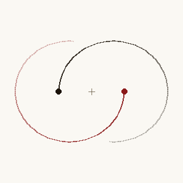
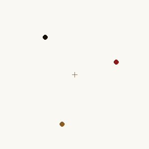
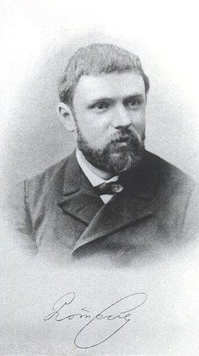

Physics · Chaos Theory
ニュートンは正しかった。それでも、未来は読めなかった。天体をひとつ増やしただけで、方程式は沈黙した。
スウェーデン=ノルウェー王オスカル2世が、太陽系の安定性を問う数学賞を公告した年。3年後にポアンカレが受賞する。
同年1月、パリではエッフェル塔の建設が始まった。同年、コナン・ドイルが『緋色の研究』でシャーロック・ホームズを世に送り出した。
「決定論」という言葉は、長いあいだ「予測可能」とほぼ同じ意味で使われていた。この記事は、その等号が静かに崩れた瞬間の話だ。
明日の天気は、たいてい当たる。三日後もまあまあ当たる。だが十日先になると、予報はもうほとんど占いに近づく。スーパーコンピューターが何百万本の計算を走らせても、この「一週間の壁」はなかなか越えられない。
これが計算能力の問題なら、あと少し性能を上げれば解決するはずだ。だが何十年も経っても、壁は動かない。いくつもの気象モデルが並行して走り、巨大なデータが集まっても、二週間先を当てる予報はまだ現れていない。壁は技術の限界ではなく、大気という系そのものが持っている性質らしい。
同じ性質は、たった三つの天体にも潜んでいる。
物体が二つなら、未来は式で書ける。三つになった瞬間、それは原理的に不可能になる。計算機の性能の話ではない。系そのものが、長期の未来を自分の内側に畳み込んでいない。この記事は、自分の目でその境界を見るための体験だ。
1687年、ニュートンは『プリンキピア』で万有引力の法則を書き下ろした。質量を持つ二つの物体が互いに引き合うとき、その軌道は円か楕円か、放物線か双曲線になる——どれも綺麗な円錐曲線だ。月と地球、地球と太陽、二体なら未来の任意の時刻の位置を、一本の式から取り出せる。これは人類が初めて手にした、世界の未来を数学で読む道具だった。


二体（左）は閉じた楕円——円錐曲線のどれか。三体（右）は、初期条件次第で軌道そのものが閉じた式で書けない領域に入る。両方とも等質量で、重心は動かない。
ところが、太陽と地球に月を加えて三つにした瞬間、同じ方法が通用しなくなる。月は地球に引かれながら太陽にも引かれ、その月の重力は太陽にも地球にも返っていく。相互作用が三方向同時に起き、しかも距離の変化で力の強さも変わる。オイラーもラグランジュもラプラスも、特殊な配置では解を見つけた。だが「任意の初期配置」に対する一般解だけは、誰が挑んでも見つからなかった。
| 観点 | 二体問題 | 三体問題 |
|---|---|---|
| 自由度自由度 系の状態を完全に記述するために必要な独立した数値の数。3次元空間の1天体は、位置（x, y, z）と速度（vx, vy, vz）で6つの数値を必要とする。n個の天体なら6n個。 | 2体 × 6 = 12 保存則で消すと実質2 | 3体 × 6 = 18 保存則で消しても残8 |
| 一般解 | 存在する 円錐曲線の式 | 存在しない 1887年以来の定説 |
| 長期予測 | 原理的に無限先まで可能 | 有限時間しか当てられない |
| 具体例 | 地球と月（単独近似） 水星と太陽 | 太陽・地球・月の同時 連星系＋惑星 |
これから見せるのは、計算機の性能の話ではない。系そのものが持つ性質の話だ。だがそれを説明する前に、まず自分の目で見てほしい。議論はそのあとでいい。
下のシミュレーターでは、左に二体、右に三体が、まったく同じニュートンの方程式で動いている。違うのは天体の数だけだ。だが見比べてみれば、二つの系の振る舞いがどれほど違うかは、ほんの数秒で分かるはずだ。
左は二体、右は三体。どちらもニュートンの運動方程式で動く。二体は綺麗な楕円を永遠に描き、三体は毎回違う絡まった軌跡を描く。物理法則は同じ。違うのは天体の数だけだ。
三体のシミュレーションは毎回違う軌跡を描く。だが重要なのは「ランダム」ではない点だ。同じ初期値から始めれば、同じ軌跡を必ずなぞる。にもかかわらず、初期値をほんの少し変えると、数十秒後には完全に別の未来が現れる。これが決定論的カオス決定論的カオス
ランダム性を含まない方程式で動いているのに、長期的な振る舞いが予測不可能になる系のこと。初期値に対する感度が指数関数的に大きくなる点が本質。と呼ばれる性質だ。
三体をしばらく眺めていると、よく2つが近距離で連星化し、3つ目が周りを回るような形——「階層的三重星系」と呼ばれる構造——が現れる。これは三体問題の最も典型的な振る舞いで、実際の宇宙でもよく観察される。3つが綺麗な距離感を保って踊り続ける安定配置は、数学的にはごく特殊な初期条件でしか成立しない。
※ このシミュレーションでは、近接時の計算を安定させるために重力を「ソフト化」している（研究機関のNボディ計算でも使われる標準的な手法）。そのため、極端に近づいた天体は衝突ではなくすり抜ける。定性的なカオスの振る舞いは保たれている。長く回し続けると、まれに天体が画面端に近づくことがあり、その場合は自動的に初期状態にリセットされる。
三体問題は難しいだけで、スーパーコンピューターを使えばいずれ解ける。
計算機の性能の問題ではない。有限精度で初期条件を与える限り、ある時点から先の予測は原理的に崩れる。
カオスとはランダムのことだ。
カオス系には乱数が入っていない。同じ入力を与えれば毎回同じ軌道を描く。それでも長期予測ができない——それがカオスだ。
バタフライ効果とは「小さな行動が大きな結果を生む」ことだ。
元々の意味は、初期値の微小な差が時間とともに指数関数的に拡大する、という数理的性質。日常の「小さな親切の連鎖」とは別物だ。

アンリ・ポアンカレ
French Mathematician · 1854–1912
19世紀最後の「万能数学者」。位相幾何学から天体力学、特殊相対性理論の先駆的研究、科学哲学まで、触れた分野のほとんどに足跡を残した。オスカル2世の数学賞に応募した論文は一度受賞したのち、本人が致命的な誤りを発見し、訂正する過程で「カオス」の最初の数学的記述を残した。後に『科学と方法』で、予測の限界を哲学として書いた。
Photo: Smithsonian Institution Libraries / Wikimedia Commons (Public Domain)
"It may happen that small differences in the initial conditions produce very great ones in the final phenomena. A small error in the former will produce an enormous error in the latter. Prediction becomes impossible."
初期条件のわずかな差が、最終的な現象の大きな差を生むことがある。前者における小さな誤差は、後者において巨大な誤差を生むだろう。予測は不可能になる。
— アンリ・ポアンカレ『科学と方法』(1908)
ここからが記事の核心だ。下のシミュレーターには、三体の系が二組同時に走る。色の違うペアA（白系）とペアB（赤系）は、ほぼ同じ初期位置から始まる。差は、画面の座標でおよそ 0.001 程度——肉眼ではほぼ重なって見える。
最初の数秒、2組の軌跡は完全に重なる。やがて少しだけほつれ、ある瞬間からそれは急速に広がる。広がり方は一定ではない。指数関数的に、つまり時間が経つごとにその差が倍、倍、と膨らんでいく。下のグラフはその「ペア間の距離」を対数軸でプロットしたものだ。直線に見えるなら、それは指数関数の証拠だ。
ここでは三体系を2組同時に走らせる。2組はほぼ完全に同じ初期条件から出発する——ただし1点だけ違う。ペアAの「星A」の初期位置と、ペアBの「星A」の初期位置が、画面座標でおよそ0.001だけずれている。それ以外（星B・星Cの位置、すべての星の質量・速度・重力法則）は両ペアで完全に同じだ。乱数も一切使っていない。
この「肉眼では絶対に見えない 0.001 の差」が、やがて2組の未来を完全に引き裂く——それを見るのがこの体験だ。
「初期差を ×0.1 にする」ボタンを押してみてほしい。差を10倍小さくしても、発散が始まる時刻はほんの少し遅れるだけだ。ログスケールで見ると、発散曲線の傾きリアプノフ指数
カオス系で、初期値の差が時間とともにどれくらい速く発散するかを示す量。正の値を持てばその系はカオス。三体問題の典型例では、差が倍になる時間は系の固有の時間スケールで決まる。は変わらない。初期条件の精度をどれだけ上げても、予測可能な時間窓はわずかしか伸びない。これが「計算機を速くしても追い付かない」ことの意味だ。
下のグラフは2組の三体系のあいだの「位相空間での距離」を対数軸でプロットしたもの。直線的に伸びる区間は、実際の差が指数関数で倍々に増えていることを意味する。やがて系のサイズに到達するとそれ以上は広がれず、横ばいになる——そこが「予測地平」だ。グラフが時間窓いっぱいまで伸びると自動的に停止するので、「再開」で続きを観察できる。
※ このシミュレーションでも、近接時の重力計算を安定させるためのソフト化を使っている。そのため、ごく近づいた天体はすり抜けるように見える。定性的な初期値鋭敏性と指数関数的発散は、この近似のもとでも忠実に再現される。
二体なら解けて、三体なら解けない。この境界は偶然ではない。ポアンカレが訂正論文のなかで発見したのは、三体系の内部に生じる「絡まり」の構造だった。それは四段階で理解できる。
本題に入る前に、ひとつだけ言葉を入れておく。リアプノフ指数——これは19世紀末ロシアの数学者アレクサンドル・リアプノフ（1857–1918）にちなむ量で、カオス系で「初期値のずれが時間とともにどれだけ速く拡大するか」を測る数だ。正の値を持つとき、系はカオスである。三体問題の発散の速さも、この一個の数で記述される。次の図はそれをいちばん単純な形で描いたものだ。
縦軸は対数スケール。直線的に伸びる＝実際の差は指数関数で倍々に増えている。ある時点で系のサイズに達すると、もう2組の軌道は無関係になる——そこが「予測地平」だ。
n体の運動には 6n 個の変数がいる。位置3つと速度3つ。二体なら12個、三体なら18個だ。ニュートン力学で「永遠に変わらない」保存量保存量（保存則）
時間が経っても値が変わらない物理量のこと。エネルギー・運動量・角運動量などが代表例。独立な保存量が多いほど、系の可能な状態は狭く絞り込まれ、解析的に扱いやすくなる。ブルンスとポアンカレは19世紀末、三体問題にこれ以上の代数的保存量は存在しないことを証明した。は、エネルギー1つ、運動量3つ、角運動量3つ、重心の等速運動6つ——合計10個。二体では12から10を引いて自由度2、これは解析的に扱える。三体は18から10を引いて8。この8という自由度の中に、系は複雑な振る舞いを隠し持てる。
系を閉じた式で解くには、自由度と同じ数の「独立した保存量」が必要だ。二体ではそれが揃っている。三体では揃わない。19世紀末、ブルンスとポアンカレはそれぞれ独立に、三体問題には代数的な保存量がもう見つからないことを証明した。新しい保存則が存在しない——これは「まだ見つかっていない」ではなく「原理的に存在しない」という定理だ。
ポアンカレが受賞論文を訂正する過程で発見したのが、これだ。位相空間位相空間（phase space）
力学系の状態を、位置と速度をすべて軸に取った抽象空間として表したもの。ある瞬間の系の全情報が1点に対応し、時間の進行とともにその点が空間内を動く。軌道の絡まり方を視覚的に議論するための数学的な土俵。（系の状態をすべての変数で表す空間）の中で、ある種の軌道が自分自身の別の部分と交差点を作り、その交差点がさらに新しい交差点を無限に生む構造。ホモクリニック絡まりと呼ばれる。ポアンカレ自身が「これほど複雑な図形を描こうとは試みない」と書き残したほどの構造だ。この絡まりこそが、長期の軌道を事実上ランダムにしか見えない形へと撹拌する。
1912年、フィンランドのスンドマンが「ほぼすべての初期条件について」収束する級数解を見つけた。数学的には大発見だが、実用には遠い——収束が遅すぎて、意味のある予測に使うには何十億項も計算する必要があった。解があることと未来を予測できることは別問題だ、とスンドマンの仕事は逆説的に示した。20世紀後半の計算機時代に入ると、数値積分は一般的になるが、それでも初期誤差の指数関数的な増幅という本質は消えない。
四つのステップが重なったとき、三体という系は、ある一点から別の一点へと確実に進みながら、同時に長期的な未来を自分の内側に畳み込まない。未来はその場その場で作られていく。過去の状態から「読み取れる」ものではない。
1687
ニュートン『プリンキピア』
万有引力の法則を書き下ろす。二体問題の解析解が得られ、世界の運動は方程式で書けるという楽観が生まれた。
1772
ラグランジュの特殊解
三体問題の特殊配置（L4・L5点など）では周期解が存在することを発見。太陽–木星–トロヤ群小惑星として実在することが後に確認される。
1887
オスカル2世の数学賞
スウェーデン=ノルウェー王オスカル2世の60歳記念として、ミッタク=レフラーが主催する数学賞が公告された。課題の一つは「n体系の運動の一般解を求めよ」——太陽系の安定性という古典的問題だった。
1889
ポアンカレが受賞、そして誤りの発見
ポアンカレの論文が受賞を決定。しかし印刷途中で編集者フラグメンから指摘を受け、ポアンカレ自身が致命的な誤りを発見する。彼は賞金以上の費用を自費で支払って配布済みの印刷物を回収した。
1890
訂正論文、カオスの誕生
訂正版では、当初「収束する」と書いていた無限級数が実は収束しないことが示され、代わりにホモクリニック点の存在が記述された。人類が初めて「決定論的でありながら予測不可能」という概念を数学として記したのはこの瞬間だ。
1892–1899
『天体力学の新しい方法』
ポアンカレは訂正論文の内容を全3巻の大著に発展させる。定性的方法・位相空間・ポアンカレ切断面など、後の力学系理論の基礎がここで確立した。
1963
ローレンツの発見
気象学者エドワード・ローレンツは、対流モデルの数値計算中に小数点以下の丸め誤差が全く別の天気予報を生むことに気づく。論文「決定論的非周期流」で、三変数の単純な系が示すカオス的軌道——後のローレンツ・アトラクター——を発表した。
1972
バタフライ効果という比喩
ローレンツがAAASでの講演に「ブラジルの一匹の蝶の羽ばたきがテキサスに竜巻を引き起こすか」という題を与えた。原題はフィリップ・メリリースが付けたもので、ローレンツ本人は当初「カモメ」を使っていた。後年、この比喩は意図を超えて独り歩きすることになる。
1987
グリックの『カオス』
ジェイムズ・グリックのノンフィクション『カオス: 新しい科学をつくる』がベストセラーとなり、「カオス理論」と「バタフライ効果」という言葉が一般社会に広まる。ローレンツは科学的セレブリティになった。
2006
劉慈欣『三体』
中国のSF作家劉慈欣が、アルファ・ケンタウリ系を舞台に「三体問題の予測不可能性に翻弄される文明」を描いた長編を刊行。科学概念が文学の中心装置になった稀有な例となった。
三体問題が示したのは、ひとつの哲学的概念の終焉だった。1814年、フランスの数学者ラプラスは次のように書いた——もしある知性が、ある瞬間の宇宙のすべての原子の位置と運動を知っていたら、その知性にとっては「未来も過去も現在と同じく、目の前に広がる一枚の絵のようになるだろう」。後にラプラスの悪魔ラプラスの悪魔
1814年にラプラスが『確率の哲学的試論』で提示した思考実験上の知性。宇宙の全粒子の位置と速度を知れば、過去も未来もすべて計算できるとされた。決定論的な古典物理の世界観を象徴する存在だが、三体問題とカオス理論によってその力が奪われた。と呼ばれるこの想像上の知性は、古典物理の世界観そのものだった。決定論的な法則は、ある瞬間から未来をすべて読み出せる——それが古典の信念だった。
"Two states differing by imperceptible amounts may eventually evolve into two considerably different states."
知覚できないほどわずかに異なる二つの状態が、最終的に著しく異なる状態へ進化することがある。
— Edward N. Lorenz, 'Deterministic Nonperiodic Flow', Journal of the Atmospheric Sciences (1963)
ポアンカレの発見は、ラプラスの悪魔から力を奪った——ただし論理的に「否定した」のではない。悪魔の前提（完璧な精度で初期条件を知る）と、現実の予測がどう食い違うかを示したのだ。カオス系では、初期値の誤差が指数関数的に拡大する。逆に言えば、初期値の精度を上げても、予測できる時間は誤差の対数でしか伸びない。精度を10倍にしても、100倍にしても、予測時間はわずかにしか伸びない。1兆倍の精度があっても、ほんの数倍だ。指数関数の暴力に対して、対数の前進では太刀打ちできない。
スーパーコンピュータをいくら速くしても、この壁は越えられない。コンピュータの仕事は「初期値を入れて方程式を解く」ことだから、入力の精度を上げない限り出力の精度も上がらない。さらに1927年、ハイゼンベルクの不確定性原理が、測定精度そのものに物理法則の上限を課した。位置と運動量を同時に完璧に知ることは、原理的に不可能だ。カオスと量子力学の合わせ技で、「有限の時間より先は計算できない」が宇宙の構造に書き込まれた事実になった。決定論の終わりは、量子力学よりずっと早く、古典物理の内側から静かに始まっていた——三体問題というたった一つの古典的な問題のなかから。
日常のスケールでこの事実と向き合うのは難しくない。振り子の先に振り子をつけた二重振り子二重振り子
一本の振り子の先にもう一本の振り子をぶら下げた装置。見た目は単純だが、運動方程式はカオス的になる。同じ初期状態からスタートしても、わずかな揺れの差で全く別の動きを描く。は、家のコーヒーテーブル上で作れるカオス装置だ。水流が乱流に変わる瞬間、心拍の不整脈、生態系の個体数変動、金融市場の短期変動——どれも内部に三体問題と同じ「初期値に対する指数関数的感度」を抱えている。
そして、冒頭で触れた天気予報。気象もまた、ナビエ・ストークス方程式というれっきとした決定論的法則に従う。それでも一週間先の予報が外れるのは、観測機器の精度が足りないからでも、計算機が遅いからでもない。地球の気象システムでは、わずかな初期誤差が「e 倍」に膨れ上がるまでの時間（リアプノフ指数の逆数で、リアプノフ時間と呼ばれる）が、たまたま一週間程度だからだ。スーパーコンピュータを千倍速くしても、観測点を百倍に増やしても、予測可能な期間はわずかしか伸びない。三体問題で起きていることと、空の上で起きていることは、本質的に同じ一つの現象である。
劉慈欣『三体』（2006）
アルファ・ケンタウリ系に三つの太陽を抱えた惑星の文明を描く。三体問題を主題にした長編SFは他に例を見ず、2015年のヒューゴー賞受賞を経てNetflix版（2024）でさらに広く知られた。文明の運命が一つの数学的性質に縛られている、という構造はこの小説の核心だ。
映画『バタフライ・エフェクト』（2004）
主人公が過去に介入するたびに現在の世界が完全に変わる。題名は明らかにローレンツの比喩から取られているが、作中の因果関係は科学的なカオスとはほぼ別物だ。「小さな原因が大きな結果を生む」という通俗的な理解が映画を通じて広まった代表例。
映画『ジュラシック・パーク』（1993）
数学者イアン・マルコム博士がカオス理論を引用しながら、公園の運営は必ず制御不能になると警告する場面がある。原作（マイクル・クライトン 1990）でもカオス理論は構造上の要として何度も登場する。カオスが大衆文化に入った最初期の作品のひとつ。
三体問題は、宇宙が閉じた本ではないことを教えた。方程式は世界を支配するが、その方程式の解を人間が「読む」ことには、系が自ら設ける限界がある。ラプラスが夢見た悪魔は、わずかな初期値の不確かさが指数関数で膨らむ前では、有限の時間先までしか視界を持てない。それでも私たちは明日の予報を見て傘を持つ。完全な予測を諦めた上で、有限の先まで見通す——それが、ポアンカレ以降の科学が受け取った新しい態度だった。
Sur le problème des trois corps et les équations de la dynamique
オスカル2世賞の訂正版論文。ホモクリニック点の概念が初めて数学として記述された、決定論的カオスの起点となる論文。後に『天体力学の新しい方法』3巻へと発展する。
Deterministic Nonperiodic Flow
3変数の対流モデルがカオス的軌道を描くことを示した論文。後の「ローレンツ・アトラクター」の形がここで初めて現れる。気象予報の有限地平の理論的根拠となった。
Poincaré and the Three Body Problem
オスカル賞の経緯から、ポアンカレが自分の誤りを発見するまでの劇的な過程を一次資料（ミッタク=レフラー研究所の手書き草稿）から追った決定版。訂正前後の差分を詳細に比較している。
Chaos: Making a New Science
カオス理論の成立史を描いたノンフィクションの古典。ローレンツ、マンデルブロ、フェイゲンバウム、スメイルなどの人物像を中心に科学史として読める。「バタフライ効果」を一般社会に広めた決定的な一冊。
Science et méthode
ポアンカレ自身による科学哲学のエッセイ集。本記事で引用した「初期条件のわずかな差が最終的な現象の大きな差を生む」という一節はこの本の第1部第4章に収められており、カオスについての最も早い哲学的定式化とされる。